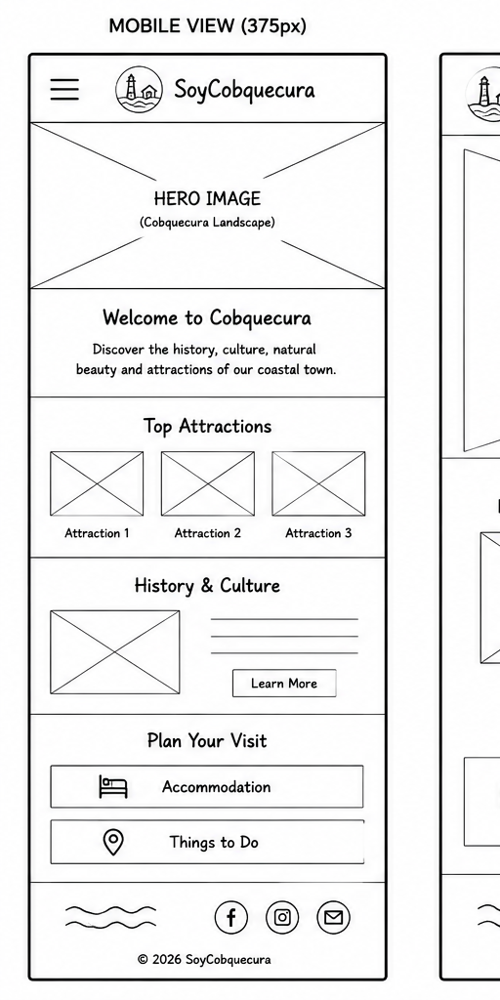
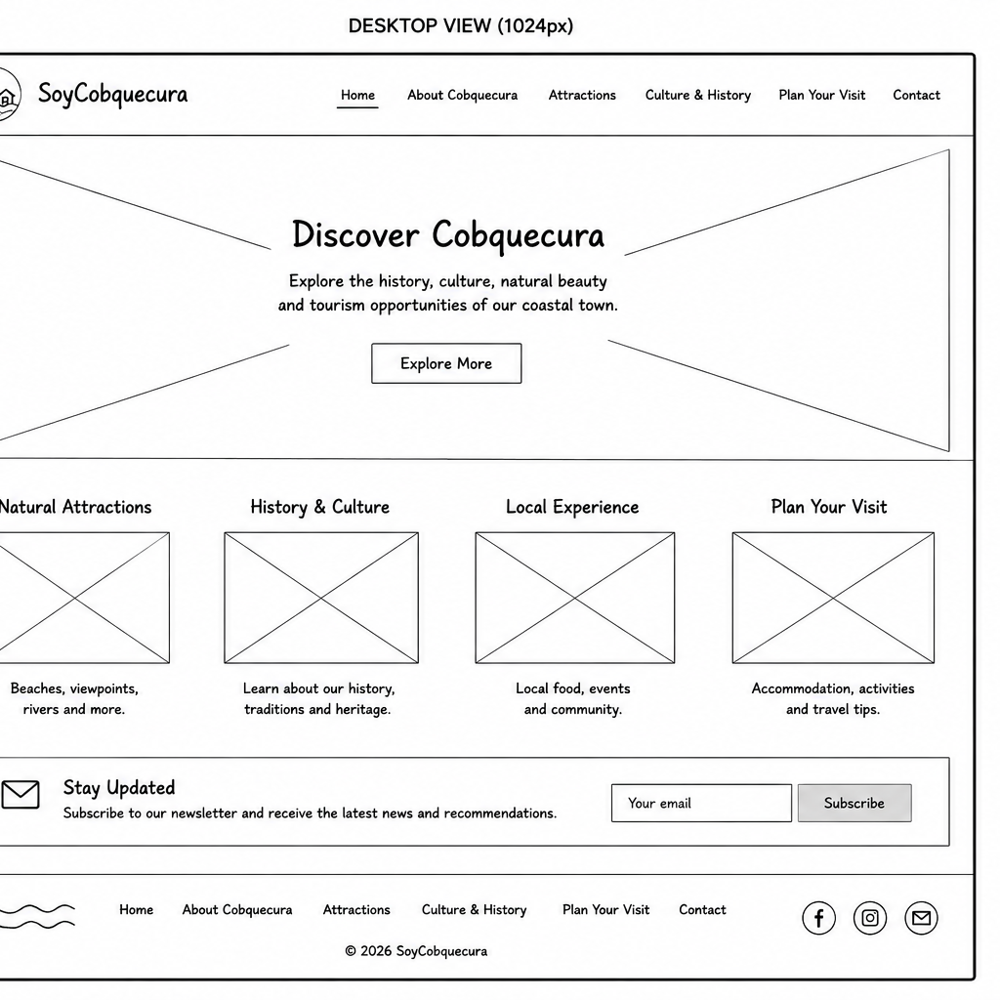

Site Name
SoyCobquecura
The name "SoyCobquecura" was chosen because it represents the identity, culture, and community spirit of Cobquecura. The website aims to showcase the town's history, traditions, natural attractions, and tourism opportunities.
Purpose
This website provides information about Cobquecura, including its history, culture, natural attractions, tourism opportunities, and local points of interest. Visitors will be able to learn about the community and plan activities during their visit.
Scenarios
- What are the most popular natural attractions to visit in Cobquecura?
- How can visitors learn more about the culture and history of Cobquecura?
- Where can visitors find accommodation options in Cobquecura?
Color Schema
Ocean Blue (#0F4C81)
Used for headings, navigation, and footer elements.
Sunset Orange (#D4A017)
Used for accents, highlights, and section titles.
Typography
Merriweather
Used for headings and subheadings.
Open Sans
Used for body text and paragraphs.
Wireframe
Mobile View

Desktop View
